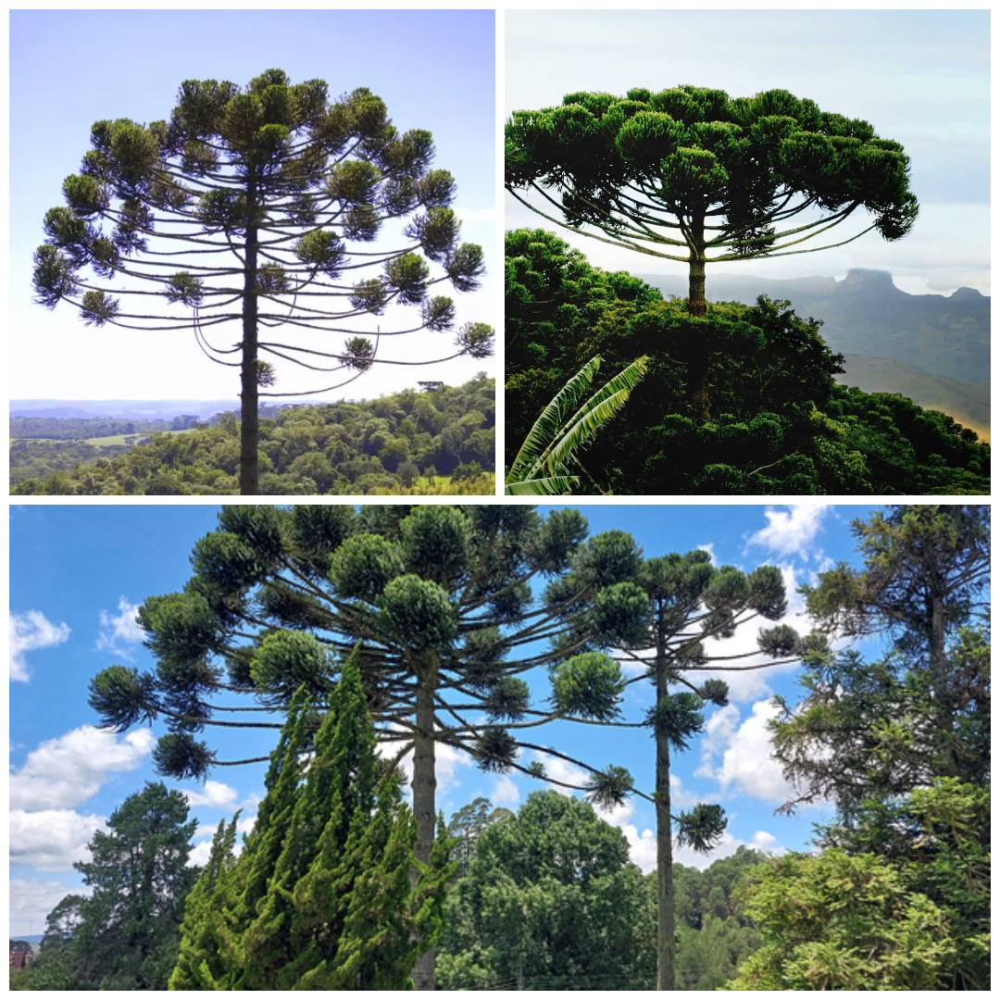
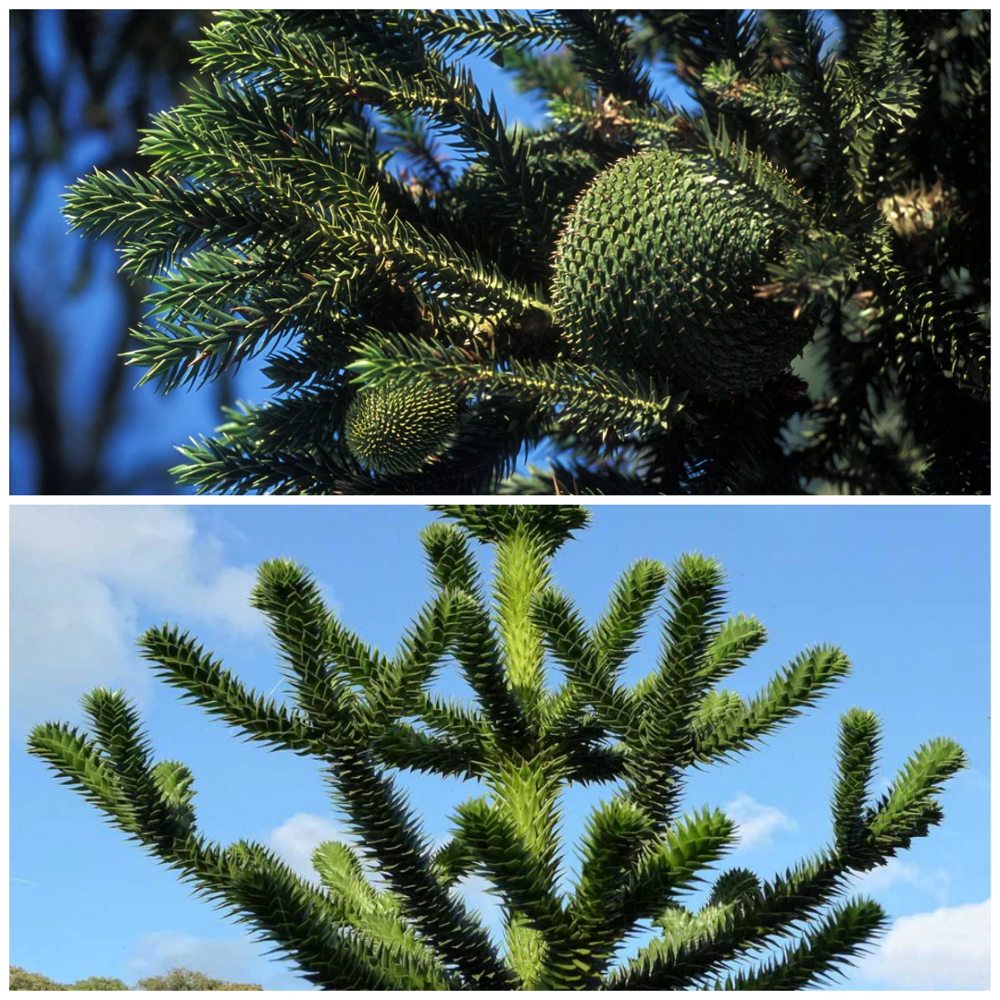
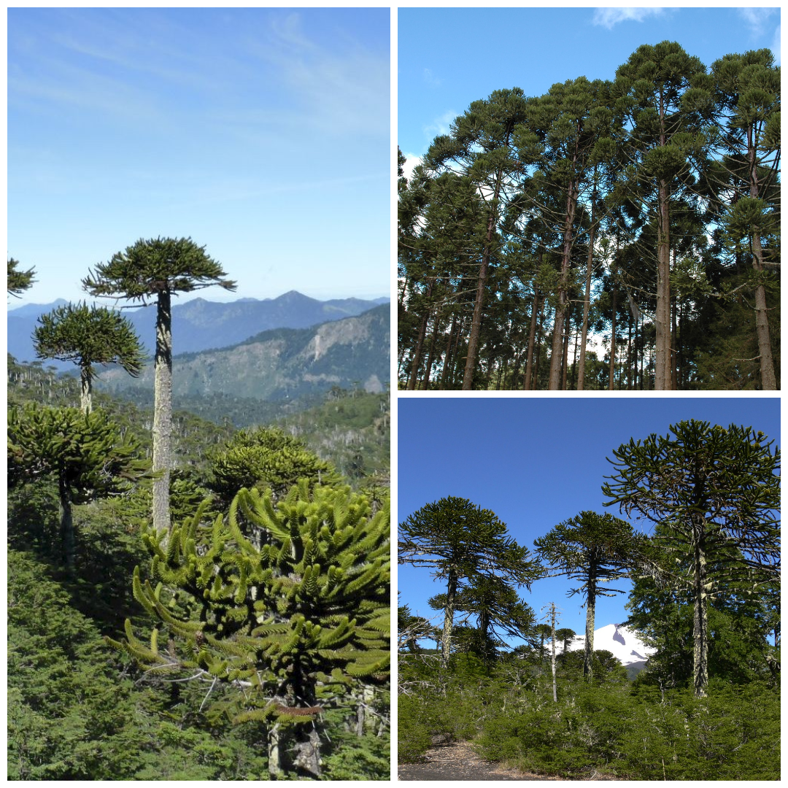

Araucárias: Uma Joia da Biodiversidade
O legado verde das matas subtropicais
Características Gerais:
-Nome científico: Araucaria angustifolia.
-Popularmente conhecida como pinheiro-do-paraná.
-Árvore nativa da Mata Atlântica, especialmente das regiões sul e sudeste do Brasil.
-Pode alcançar até 50 metros de altura e viver por séculos.
As araucárias são símbolos culturais e econômicos das regiões sulinas do Brasil, com o pinhão sendo destaque na culinária local. Sua madeira foi intensamente explorada, levando a um risco de extinção. Hoje, restam apenas fragmentos das florestas originais, e esforços de conservação, como reflorestamento e proteção legal, buscam preservar essa espécie emblemática e sua importância ambiental.


Importância Ecológica e Curiosidades:
- Fornece abrigo e alimento para diversas espécies, como a gralha-azul.
- As sementes (pinhões) são ricas em nutrientes e essenciais para a fauna local.
-Contribui para a manutenção dos ecossistemas subtropicais.
- O ciclo de vida das araucárias é longo, com maturação reprodutiva apenas após décadas de crescimento.
As araucárias são essenciais para os ecossistemas subtropicais, fornecendo alimento e abrigo para a fauna local. Suas sementes, os pinhões, são dispersas pela gralha-azul, que contribui para a regeneração da espécie. Com um ciclo de vida longo e maturação reprodutiva tardia, as araucárias destacam a importância de sua preservação frente às ameaças ambientais.
Relevância Cultural e Conservação:
- A madeira é explorada intensamente devido à sua qualidade, por isso sobram apenas alguns fragmentos da mata original.
-Possui importância cultural principalmente para os povos nativivos da região sul e sudeste do Brasil.
- A árvore é protegida por lei, porém isso não impede que araucárias sejam derubadas ilegalmente.
-Pode alcançar até 50 metros de altura e viver por séculos.
As araucárias são parte importânte da cultura de povos do sul do Brasil, para a fauna local e é também utilizada para vários pratos locais. Porém essa árvore de tamanha importância sofre risco de extinção e as leis estabelicidas não ajudam a amenizar esse processo.



Contatọ̣: (41)99105-7418